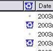

ジャンクメールコントロールを利用するには
このドキュメントは、Mozilla に付属しているヘルプファイルに載っていない、ジャンクメールコントロール (迷惑メール監視機能) に関する補足的なチュートリアルです。
このドキュメントの目的は単なる情報提供に過ぎません。インターネット上でプライバシーや個人情報の安全を守るために、ある程度の対策を講じる手助けにはなるかもしれません。しかし、この情報は、オンライン上でのあらゆるプライバシーやセキュリティに関する問題を解決するものではありませんし、インターネット上での十分なプライバシー・セキュリティ保護対策について mozilla.org の勧告を説明するものでもありません。
- ジャンクメールコントロールを利用するには
- ジャンクメールコントロールのオプション
- ジャンクメールコントロールとフィルタ
- ジャンクメールの配信停止について
- メールアドレスの収集を防ぐには
- スパムメールを開封しても大丈夫ですか?
- ジャンクメールの送信者に対して、自分へのメールを「宛先不明」で差し戻すには
- Web 上の関連資料
ジャンクメールコントロールを利用するには
Mozilla のジャンクメールコントロールは、受信メッセージを評価し、それらがジャンクメール (迷惑メール) かどうかを特定できる機能です。この機能はベイズ式分類法を利用しており、最初に、ジャンクメールとそうでない普通のメールをたくさん Mozilla に示して、トレーニングをおこなう必要があります。それから、新着メールを自動分類させます。Mozilla が間違った判断をした場合は、そのたびに訂正してください。
この機能を初めて使ったとき、何もしていないように見えても驚かないでください。このシステムは、頻繁に使えば、非常に正確な動作をするようになります。
ジャンクメールコントロールの使い方:
-
まず、Mozilla にジャンクメールとそうでない普通のメールを認識させて、トレーニングしてください。選択したメールのジャンクステータスを切り替えるには、以下の 3 通りの方法があります。
Tools メニューを開いて、
Mark the selected messages as junk
かMark the selected messages as not junk
を選択します。ツールバーの Junk ボタンをクリックします。
 メッセージリストの Junk Status カラムをクリックして切り替えます。(見当たらない場合は、リストヘッダバーのいちばん右にあるボタン
 をクリックして、ポップアップメニューから Junk Status を選択してください)
をクリックして、ポップアップメニューから Junk Status を選択してください)
ジャンクステータスを切り替えると、Junk Status カラムにゴミ箱アイコンが表示 (非表示) されて、選択されたメッセージのジャンクステータスが分かるようになっています。
-
Tools メニューを開いて、
Junk Mail Controls...
を選択します。お使いのメールアカウントに対するジャンクメールコントロール機能を有効にすると、Mozilla は自動的に受信メッセージを分類するようになります。(ジャンクメールコントロールのオプション 参照) -
ウイルスに感染したメールをトレーニングさせた場合は、ホワイトリストの無効化を検討してください。(メールを通じて広がる多くのウイルスは、感染したコンピュータのアドレス帳に載っている人たちに大量のメッセージを送りつけます) ウイルス (Klez など) に感染したメールが引っ掛かっていないか、確認してください。
-
メッセージを、ジャンクメール、あるいは普通のメールであると間違って分類した場合は、必ず訂正してください。
-
既存のメッセージを分析するには、メッセージを選択して、Tools メニューを開き、
Run Junk Mail Controls
を選択してください。
注意: トレーニング・データベースに、ジャンクメールでない普通のメールの情報が含まれていないと、ジャンクメールコントロールは機能しません。ジャンクメールコントロールが機能しない場合は、メッセージをいくつか選択して、ジャンクメールではないことを明示的に覚えさせてください。
ジャンクメールコントロールのオプション
ジャンクメールコントロール機能をカスタマイズするには、Tools メニューを開いて Junk Mail Controls...
を選択してください。
-
Account: メールアカウントを選択すると、そのアカウントのジャンクメールコントロール設定を変更できます。(注意: どのアカウントも同じトレーニング・データベースを共有します)
-
Junk Mail Log: このボタンをクリックすると、ダイアログが開いて、ジャンクメール検出の履歴を確認できます。ダイアログから履歴を削除することも可能です。
-
Enable junk mail controls: このオプションを切り替えると、ジャンクメールの分類を有効 (無効) にできます。
-
Do not mark messages as junk mail if the sender is in my address book: このオプションを選択すると、知人からのメールがうっかりジャンクメールに分類されてしまうのを防ぐことができます。
-
Move incoming messages determined to be junk mail to: このオプションをクリックすると、ジャンクメールとして分類されたメールを、自動的に特別なフォルダに移動できます。
"Junk" folder on [アカウント]: これを選択すると、デフォルトのジャンクフォルダを利用します。
Other: [アカウント]: これを選択すると、好きな名前を付けた独自のジャンクフォルダを利用します。
Automatically delete junk messages older than __ days from this folder: ジャンクメールとして分類された過去のメールが本当にジャンクメールであるという自信があれば、このオプションを選択して、猶予期間を過ぎたジャンクメールを自動的に削除することができます。
-
When I manually mark messages as Junk: これを選択すると、手動でジャンクメールをマークしたときに、Mozilla にどのような処理をさせるかを指定できます。
Move them to the "Junk" folder: これを選択すると、手動でマークしたジャンクメールはジャンクフォルダに移動されます。
Delete them: これを選択すると、手動でマークしたジャンクメールはゴミ箱に移動されます。
ジャンクメールコントロールとフィルタ
ジャンクメールコントロールは、メールフィルタの後に実行され、Inbox フォルダとそのサブフォルダにのみ適用されます。この仕組みをうまく利用すると、例えば、ジャンクメールかどうか分からないメールにフィルタを掛けて、Inbox 以外の特別なフォルダに移動させれば、それらのメッセージはジャンクメールとして分類されずに済みます。(ニュースレターを購読する場合や、議論が管理されたメーリングリストに参加している場合は特に便利です)
ジャンクメールの配信停止について
たいていのスパムメールには、配信停止の手続きが書かれています。しかし、これは絶対に スパム業者のウソ
ですから、そのまま書いてある手続きに従ってはいけません。返信をしてしまえば、単にあなたのメールアドレスが確認されて、さらにジャンクメールが増えてしまいます。
メールアドレスの収集を防ぐには
残念なことに、メールアドレスの公開を友人のみにするなど個人利用に限定しない限り、遅かれ早かれスパム業者はあなたのメールアドレスを収集してしまいます。スパム業者は通常、メーリングリストや Usenet の投稿、Web サイトを検索して、メールアドレスを収集しています。メーリングリストに投稿する場合は、数多く提供されているフリーメールのどれかを利用して、公開アカウントを作成しましょう。公開アカウントがジャンクメールの標的になったら、いつでもまた新しいアカウントを作成できます。ニュースグループに投稿する場合は、そのニュースグループのルールによって、公開アカウントを利用するか匿名で投稿すれば良いでしょう。
スパムメールを開封しても大丈夫ですか?
Mozilla はメール内で自動的にマシンコードを実行することはありません。また、デフォルトでは、メールに書かれたスクリプトを実行しないようになっています。このため、通常はスパムメールを開封しても大丈夫です。(ただし、他の人にメッセージを転送する場合は、丁寧に、どの添付ファイルもウイルスに感染していないか確認しましょう。あなたにとって大丈夫であっても、他の人にとってはそれが安全でないかもしれません)
プライバシーに対する心配があるなら、いくつか知りたいことがあるでしょう:
-
Mozilla は、デフォルトではメッセージにリモート画像を読み込みます。画像を取得するためのリクエストがリモートサーバに送られることで、あなたがメールを読んだことが確認されてしまうおそれがありますから、リモート画像の読み込みを禁止したいと考える人もいるでしょう。
Mail & Newsgroups 内でリモート画像を無効にするには、Edit メニューを開き、
Preferences
を選択します。Privacy & Security
のカテゴリを選択し、サブカテゴリImages
を選んでください。Do not load remote images in Mail & Newsgroup messages
のオプションにチェックを入れてください。 -
リモート画像かメッセージに含まれた画像かどうかにかかわらず、すべての画像を表示させたくない場合、あるいは、すばやく画像を表示できるようにしたい場合は、View メニューを開いて、
Message Body As
を選択し、Simple HTML
かPlain Text
を選択してください。また、View メニューのDisplay Attachments Inline
からチェックを外してください。特定のメッセージに限って画像を表示させるには、
Original HTML
オプションを選択し、Display Attachments Inline
にチェックを入れてください。 -
Mozilla は、デフォルトではメールメッセージが Cookie を読み書きしないよう設定してあります。これが本当かどうかを確かめるには、Edit メニューを開いて
Preferences
を選択してください。Preferences ダイアログの中からPrivacy & Security
カテゴリを選択し、サブカテゴリCookies
を選び、Disable cookies in Mail & Newsgroup
オプションにチェックが入っているか確認してください。Netscape のサイトで Cookie に関する詳しい情報 を見ることができます。
-
Mozilla は、デフォルトではメッセージ内でスクリプトを実行しません。これが本当かどうかを確かめるには、Edit メニューを開いて
Preferences
を選択してください。Preferences ダイアログの中からAdvanced
カテゴリを選択し、サブカテゴリScript & Plug-ins
を選んでください。Enable JavaScript for
ペインの中でMail & Newsgroups
にチェックが入っているか確認してください。
ジャンクメールの送信者に対して、自分へのメールを「宛先不明」で差し戻すには
迷惑メールの送信者に対して、偽の unknown-recipient (受取人不明を知らせる) 返信メッセージを送り返すことができる「宛先不明」機能を、今まで多くのユーザがリクエストしてきました。その目的は、通常、そのような「宛先不明」メッセージを受信する帯域をジャンクメールの送信者に負担させ、懲らしめることです。残念ながら、そうした手段は、ほとんどの場合、罪のない第三者を懲らしめることになってしまいます。ジャンクメール送信者の多くは他人のメールアドレスを詐称しているため、「宛先不明」メッセージを送り返すことで、その人たちに二重の危害を加えることになります。そのようなことをしても、ジャンクメールの送信者にとって、メッセージを送受信するコストはほとんどかかりません。一方で、ネットワーク事業者に対して、スパムメールとあなたの「宛先不明」メッセージの両方を処理させる負担をかけることになります。また、プロバイダも、偽の「宛先不明」メッセージを送り返すユーザの利用を禁止する可能性があります。
Web 上の関連資料
スパムとスパム業者について詳しく知りたいときは、spam.abuse.net をご覧ください。また、素晴らしい Net Abuse FAQ も参考になります。これらのサイトが役に立つと思ったら、ぜひブックマークしておきましょう。